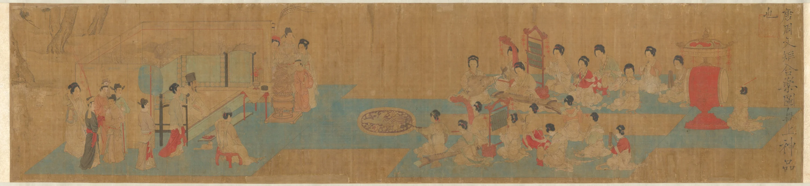

樂
唐音入画
展卷 · Loading
中
EN
樂
观乐指引
观乐指引
点击文件夹 · 取出观乐券
樂
中国古画中的民乐
唐音入画 · 合乐图
传五代南唐·周文矩绘 美国芝加哥美术馆藏
画卷之上，十数乐伎依序而奏。
移动光标，于绢本光影间寻访十一器。
开始观赏
移動光標 · 照亮畫卷
滚轮 / 拖动横向展卷 · 点击朱砂墨点进入乐器

横向展卷 · 点朱砂墨点进入乐器
赏 · 唐人宫乐
观 · 合乐长卷